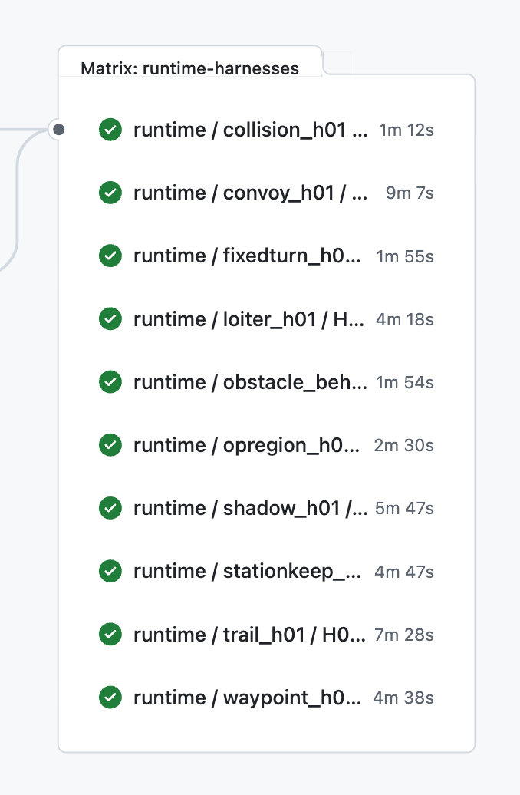

Harness case matrices across the catalog.
MOOS-IvP CI/CD Pipeline
Regression harnesses for MOOS-IvP Apps and Behaviors.
This site introduces a CI/CD workspace that packages MOOS-IvP missions into repeatable gates for contact management, obstacle management, COLREGS, and avoidance behavior changes.

Repository Snapshot
Current pipeline at a glance
Case matrices covering app-level units, motion checks, behavior checks, and performance gates.
MOOS apps and IvP behavior targets, plus their related stress missions.
Simple mode validation, moving mission outcomes, and longer stress/endurance runs.
Harness Catalog
MOOS apps and IvP behaviors under test
Select an app or behavior family to see its harness pages.
Contact Management pContactMgrV20 Detects and reports relevant contacts so downstream avoidance behaviors can react to them. 2 harnesses
Obstacle Management pObstacleMgr Accepts obstacle inputs, builds obstacle representations, and publishes alerts used by obstacle avoidance. 2 harnesses
COLREGS Behavior BHV_AvdColregsV22 Exercises COLREGS classification, threshold edges, execution quality, parameter sensitivity, and multi-vehicle stress cases. 6 harnesses
COLREGS
H01 COLREGS Classification
Canonical two-vessel COLREGS classification suite for BHV_AvdColregsV22.
COLREGSH02 COLREGS Thresholds
Geometry-edge suite for classification thresholds and near-boundary COLREGS behavior.
COLREGSH03 COLREGS Execution
Execution-quality layer for COLREGS cases after classification is known to be correct.
COLREGSH04 COLREGS Parameters
Parameter-regression suite varying one BHV_AvdColregsV22 knob at a time.
PerformanceP02 COLREGS Joust
Two- and three-vehicle COLREGS pressure harness focused on sustained safe spacing.
PerformanceP03 COLREGS Traffic Ring
Seeded five-vehicle traffic-ring harness with repeated reassignment pressure.
Collision Avoidance Behavior BHV_AvoidCollision Owns contact-alert requests, behavior lifecycle, and clean resolution of collision-avoidance encounters. 1 harness
Obstacle Avoidance Behavior BHV_AvoidObstacleV24 Checks obstacle-avoidance lifecycle, helper flags, clean transit outcomes, and longer obstacle-field stress cases. 2 harnesses
Operating Region Behavior BHV_OpRegionV24 Checks save and halt envelopes, entry/exit timing gates, reset behavior, and runtime region updates. 1 harness
Waypoint Behavior BHV_Waypoint Checks route traversal, capture modes, cycle flags, runtime point updates, status outputs, and invalid route inputs. 1 harness
Loiter Behavior BHV_Loiter Checks loiter acquisition, polygon forms, center updates, speed modes, status reports, and invalid polygon inputs. 1 harness
Station-Keeping Behavior BHV_StationKeep Checks station-point holding, hibernation, radii, speed updates, warning recovery, and invalid station-keeping inputs. 1 harness
Trail Behavior BHV_Trail Checks moving target trailing geometry, pursuit relevance, runtime trail updates, and missing-contact handling. 1 harness
Convoy Behavior BHV_Convoy Checks mark queues, leader/follower geometry, speed branches, runtime updates, visual breadcrumbs, and missing-contact handling. 1 harness
How It Works
From scenario to CI verdict
- Stem missions define reusable MOOS community layouts, behavior configs, and baseline geometry.
- Harness overlays use small patches so each run isolates one scenario or regression risk.
- The harness
zlaunch.shwrapper selects the case and then delegates to the sharedxlaunch.shpath, keeping local and CI runs aligned. pMissionEvalreports and shell-side checks reduce the run to compact CI result lines.